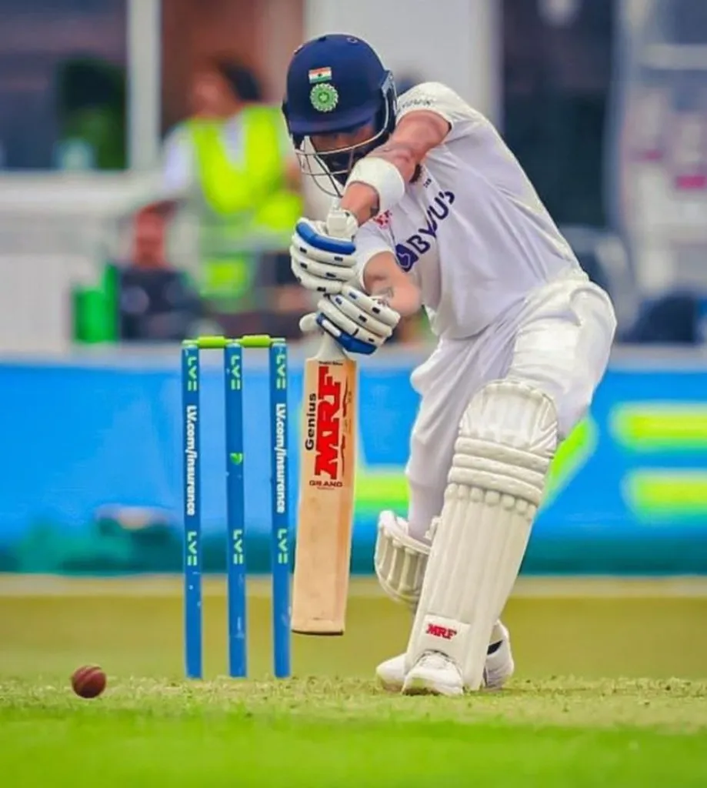
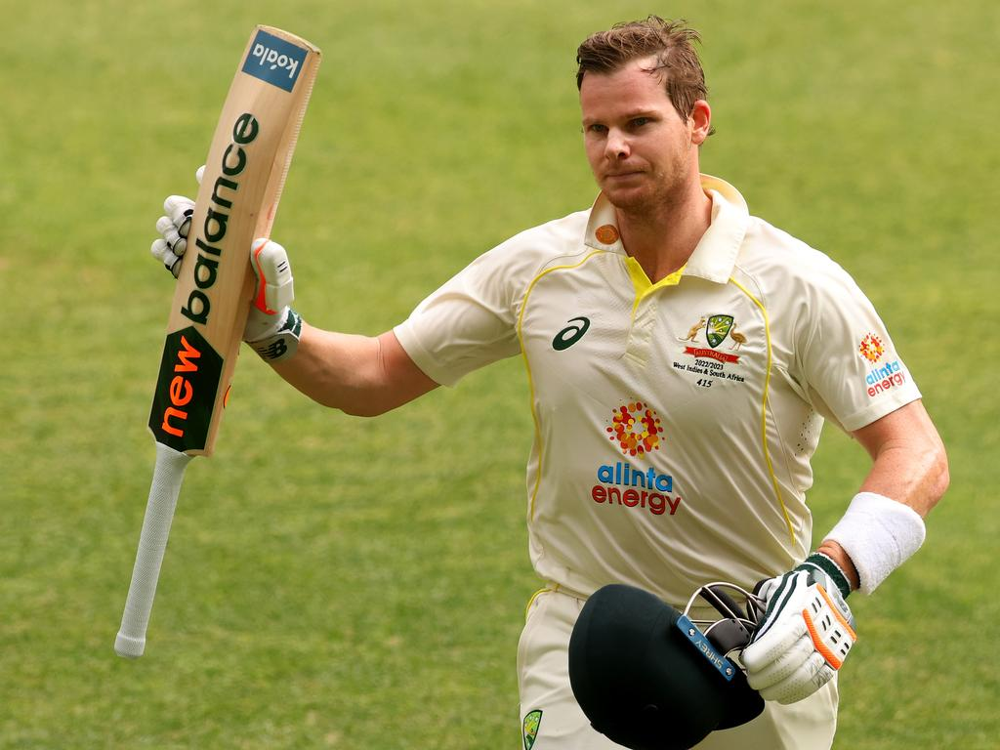
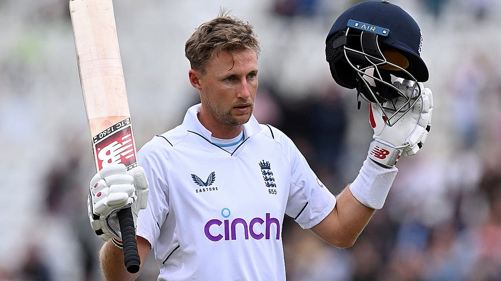

In this page, you can see the top four players of the current era who have achieved lot of success in the sport of cricket.

Virat Kohli
Captain, India
Runs: 7240 | Avg: 53.62 | SR: 93.39

Steven Smith
Captain, Australia
Runs: 7540 | Avg: 61.37 | SR: 87.41

Kane Williamson
Captain, New Zealand
Runs: 6723 | Avg: 53.48 | SR: 80.91

Joe Root
Captain, England
Runs: 8231 | Avg: 50.08 | SR: 86.12